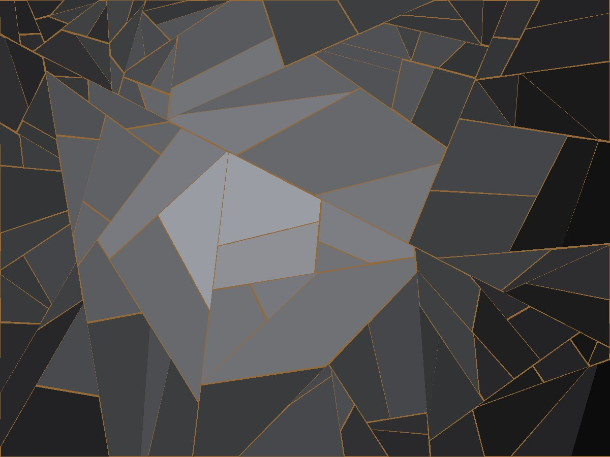

Verre soufflé, bronze coulé
Ce que la fracture décide à ma place
Je souffle une forme, je la fais rompre, puis je coule du bronze dans ce que la rupture a ouvert. Le dessin final ne m'appartient qu'à moitié : c'est le refroidissement qui tranche.

La série Éclats
Onze pièces produites entre 2024 et 2026. Chacune part d'une paraison soufflée puis soumise à un choc thermique contrôlé. Le bronze est ensuite coulé à la cire perdue dans le réseau de fractures, à 1 100 °C.
Le taux de perte reste autour de quatre pièces sur dix. C'est le prix du procédé, et c'est aussi ce qui rend deux pièces impossibles à confondre.
Atelier
L'atelier est installé à Meisenthal, en Moselle, dans une ancienne halle verrière. Four à bassin, arche de recuit, fonderie attenante. Les visites se font sur rendez-vous, plutôt les jours de coulée.
Exposition en cours
Éclats — Galerie Kessler-Roy, 14 rue de Thorigny, Paris 3ᵉ. Du 11 septembre au 25 octobre 2026. Vernissage le 11 septembre à 18 h 30.
La monographie qui accompagne l'exposition paraît aux Éditions Loco, 144 pages, textes d'Anne Kessler.